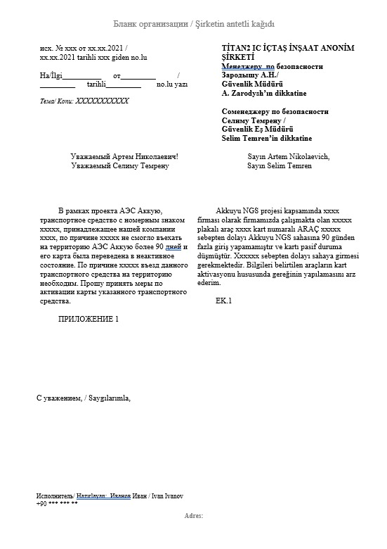

Akkuyu NGS'de erişim rejimi kurallarının değişmesi sebebiyle, 90 günden fazla süredir Akkuyu NGS şantiyesine giriş yapmamış
araçların giriş-çıkış kartları sistem tarafından otomatik olarak bloke edilmektedir. Bu durumun şantiyeye girişlerde sorun
oluşturmaması için, 90 günden fazla giriş yapmamış araçlar için giriş yapılması gereken günden en az 1 iş günü öncesinde, ilgili
firmanın antetli kağıdına Rusça ve Türkçe dillerinde resmi bir mektup hazırlanması gerekmektedir.
Bu mektubu hazırlayarak access@t2ic.com , rifat.kucuk@t2ic.com ve gonenc.caynak@t2ic.com
adreslerine, e-posta konusu olarak “90 Gün pasif araç kart aktivasyonu” yazarak gönderilmesi sürecin başlatılması için yeterli olacaktır.

90 gün bloke durumunda olan araç kartlarının aktivasyon işlemlerinin başlatılması için mektuba ek olarak, 90 Gün Bloke Excel dosyasının aşağıdaki
bilgileri eksiksiz şekilde doldurulması gerekmektedir:
1. AD SOYAD: (Excelde "1." numaralı okla gösterilmiş) Personelin tam adı.
2. TC: (Excelde "2." numaralı okla gösterilmiş) Personelin kimlik numarası.
3. KART NO: (Excelde "3." numaralı okla gösterilmiş) Araç kartının numarası.
4. FİRMA: (Excelde "4." numaralı okla gösterilmiş) Araç kartında belirtilen firma bilgisi.
5. AKTİVASYON ARALIĞI: (Excelde "5." numaralı okla gösterilmiş) Kartın aktif olacağı tarih aralığı.
6. PLAKA: (Excelde "6." numaralı okla gösterilmiş) Aracın plaka bilgisi veya iş makinesi ise motor şase numarası.

ÖNEMLİ: Mektup Zorunluluğu: TSM ENERJİ, JV ve ICTAS NUKLEER firmalarına ait araçlar için mektup yazma zorunluluğu yoktur.
ÖNEMLİ: Kart Durum Kontrolü: Gelen araçların kartlarının aktif/pasif durumunu önceden kontrol ediniz. Bu, girişte
sorun yaşanmaması adına gelişleri organize etmek için önemlidir.
ÖNEMLİ: Kartların Araçta Bulunması: Eski kartlar aktif olacağından, araçların kartlarının yanlarında olduğundan emin olunuz.
Eğer kartların araçta bulunmadığına dair bir şüphe varsa, araçlar ana girişe gelmeden bu durumu teyit ediniz.
NOT: Eksik Evrak Durumu: Eksik evrakla yapılan başvurular işleme alınmayacaktır.